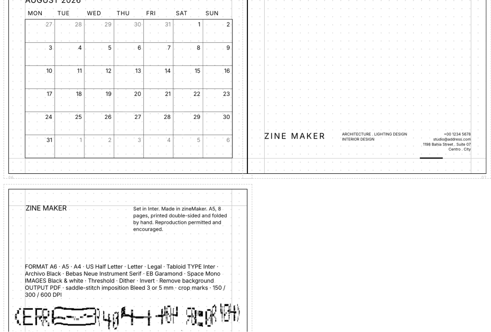
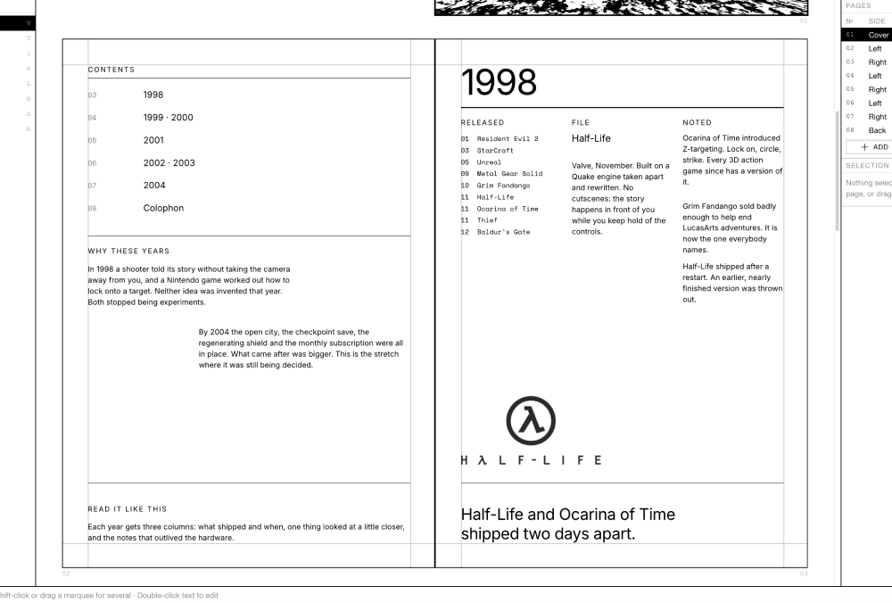
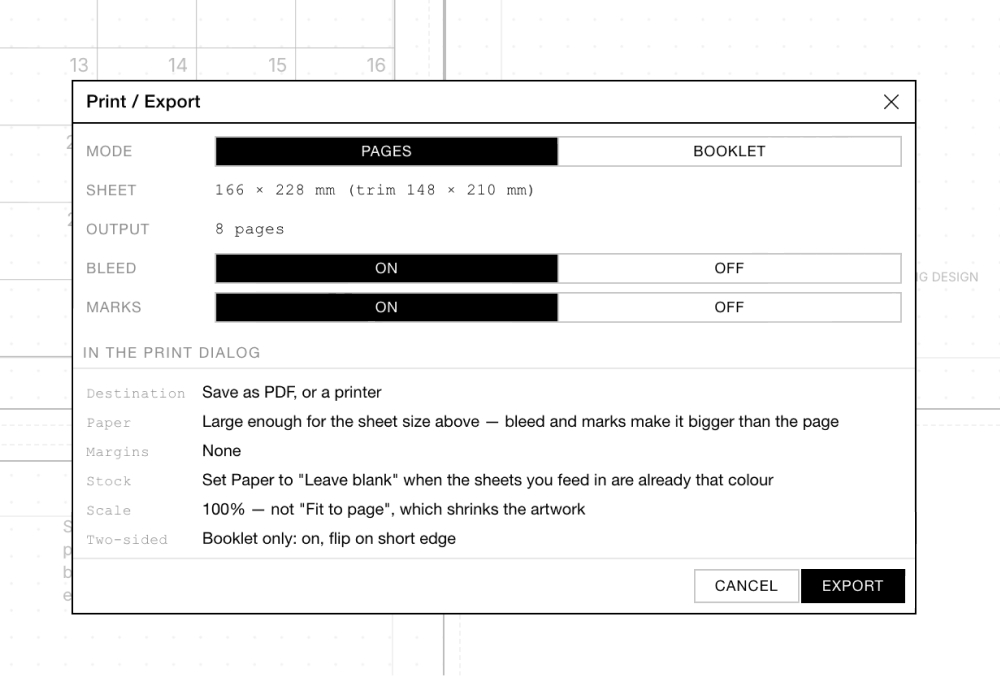
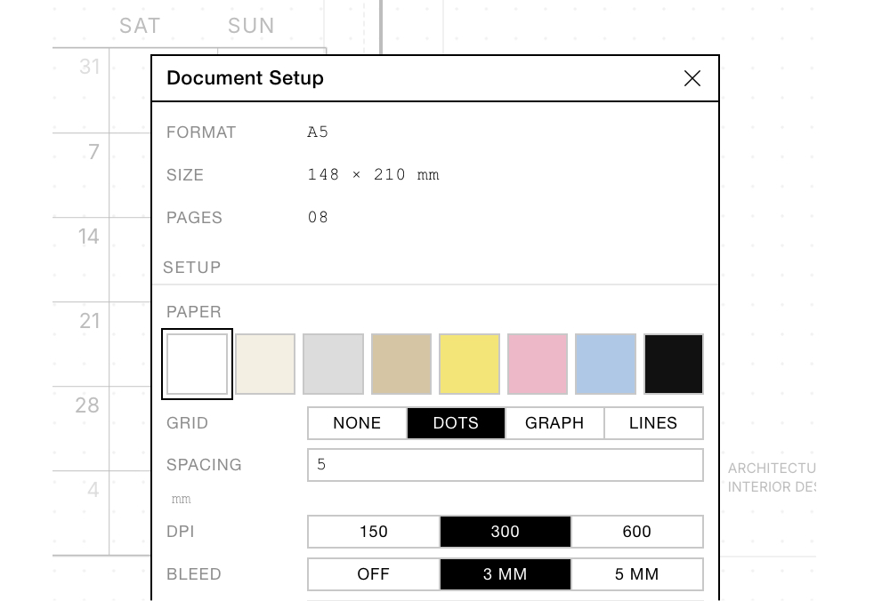

zineMaker
Make a zine. Print it double-sided. Fold the stack. Staple it. The pages come out in the right order.
That last bit is the whole point. Laying out eight pages is easy — working out that page 8 sits next to page 1 on the first sheet is where everyone gives up and starts numbering paper on the floor. zineMaker does that part and hands you a PDF for the copy shop, or for the photocopier at work nobody's watching.
It runs in a browser. No account, no cloud, nothing uploaded. Your zine stays on your machine until you save it.



